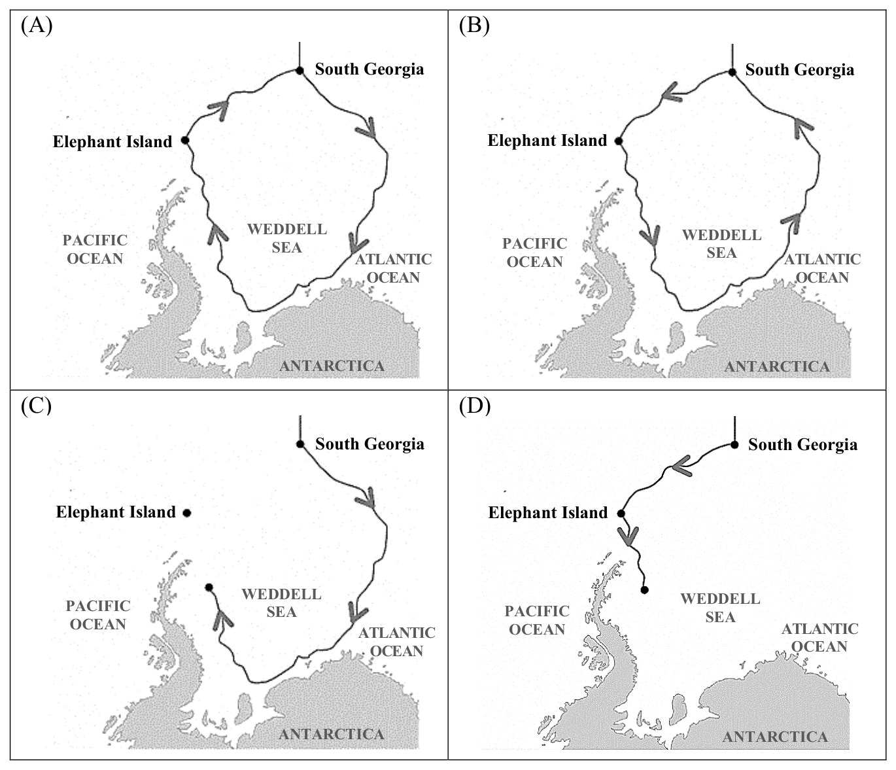

開卷有益 ／
學科能力測驗 ／ 英文 ／ 115 年115 年學科能力測驗英文試題與答案
這一頁是民國 115 年學科能力測驗英文的整份歷屆試題，共 53 題，題目與標準答案出自大考中心 學測歷年試題（依著作權法 §9，考試試題不受著作權保護），其中 53 題附有詳解。以下逐題列出題幹、選項與答案；要計時作答或記錄成績，請用線上練習。
線上作答這一科 →
全部 53 題
第 None 題
中譯英:現在越來越多高中英文老師已經增加在課堂上使用英文的百分比。
標準答案未收錄
詳解與考點 考點：「越來越多」用 more and more 或 an increasing number of；「百分比」用 percentage；「在課堂上使用英文」為 use English in class。正解示例：More and more senior high school English teachers have increased the percentage of using English in class. 常見陷阱：混淆 percentage（比例）與 percent（百分之幾），或誤用 ratio。【AI 整理需查證】
第 None 題
中譯英:他們將學生依英語能力分成不同組別，進行多樣的聽、說活動。
標準答案未收錄
詳解與考點 考點：「依…分組」用 divide...into groups based on/according to；「進行多樣的…活動」用 conduct a variety of...activities。正解示例：They divided students into different groups according to their English proficiency and conducted various listening and speaking activities. 常見陷阱：ability 與 proficiency 語義相近但後者更精確指語言能力；omit 聽說的對應名詞。【AI 整理需查證】
第 None 題
英文作文:說明︰依提示寫一篇英文作文，文長至少120個單詞（words）。提示︰近年來養寵物的風氣在臺灣日漸普遍，而寵物在人們生活中的角色也與過去不同。請以此為主題，並參照下列圖片，寫一篇英文作文，文分兩段。第一段描述這些圖片中所呈現的現象；第二段則根據你自身的經驗或觀察，說明此現象的原因以及可能的影響。
標準答案未收錄
詳解與考點 考點：看圖作文，第一段描述圖片現象（寵物與主人同吃住、穿衣、社群打卡等），第二段分析原因（都市化、少子化、孤獨感）與影響（寵物經濟興起、動物福利意識提升）。評分重點：主題句明確、段落分明、句型多樣、120 words 以上。常見陷阱：只描述不分析，或段落未分兩段。【AI 整理需查證】
第 1 題
The mayor has such a ______ schedule that it takes weeks to arrange an interview with her.
（A） hasty（B） tight（C） diligent（D） routine答案：（B）
詳解與考點 正解：題幹說安排訪談要等數週，關鍵是市長的行程排得很滿；空格須填能修飾 schedule 的形容詞。B：tight schedule 表「緊湊、排得很滿的行程」，正呼應後文，故 B 為正解。
A：hasty 表「倉促的」，可形容決定或行動，不表示行程安排緊湊，A 錯誤。
C：diligent 表「勤奮的」，通常形容人做事勤勉，不能用來形容 schedule，C 錯誤。
D：routine 表「例行的」，只表示固定或日常，未表達行程排滿而難以約訪，D 錯誤。它看起來對，是因為例行行程也可能很忙，但 routine 本身不含「緊湊」之意。
本題考點：形容詞語境搭配——tight schedule 表行程緊湊；詞義判準——依後文「需數週安排訪談」選能表達時間已排滿的詞。
第 2 題
Jane started as an ______ art designer, but now she has a professional studio of her own.
（A） official（B） instant（C） amateur（D） elementary答案：（C）
詳解與考點 正解：題幹的轉折「but now she has a professional studio」要求前半句與 professional 形成對比。C：amateur 意為「業餘的」，an amateur art designer 指業餘藝術設計師，構成業餘到專業的對比，故 C 為正解。
A：official 是「官方的」，不與 professional 構成此處的生涯對比。
B：instant 是「立即的、即時的」，不修飾職業身分。
D：elementary 是「基礎的、初等的」，可形容程度但不表業餘身分。
本題考點：形容詞語意辨析——amateur＝業餘的，professional＝專業的；轉折線索——but now 提示前後身分或狀態的對照。
第 3 題
The teaching ______ at the famous high school soon attracted more than a dozen well-qualified applicants.
（A） career（B） vacancy（C） expectation（D） inspiration答案：（B）
詳解與考點 正解：題幹的 a dozen well-qualified applicants 指向學校釋出的教職空缺，空格需要能與 teaching 搭配、表示可供應徵的職位的名詞。B：vacancy 表「空缺、職缺」，a teaching vacancy 即「教職缺額」，能吸引合格應徵者，故 B 為正解。
A：career 表「職涯」，指長期的職業發展，不是單一可開放應徵的職缺，A 錯誤。
C：expectation 表「期望」，無法表示學校釋出的一個教職位置，C 錯誤。
D：inspiration 表「靈感、啟發」，語意與招聘情境不合，D 錯誤。它看起來對，是因為 teaching career 可指教學生涯，但題句說的是吸引十多名 applicants 的一個具體職缺。
本題考點：名詞語境搭配——vacancy 表可供填補的職缺，常與 applicants 搭配；遇招聘情境時，先判斷名詞是「職位空缺」還是泛指的職涯、期望或靈感。
第 4 題
Designed by a young engineer, the new product has created far more profit than ______ expected.
（A） initially（B） genuinely（C） alternatively（D） fundamentally答案：（A）
詳解與考點 正解：題幹「far more profit than ___ expected」比較實際獲利與原先預期，關鍵是預期發生的時間點。A：initially 意為「最初地」，far more profit than initially expected 表獲利遠超過最初預期，故 A 為正解。
B：genuinely 是「真誠地、真正地」，不表預期的時間。
C：alternatively 是「或者、作為替代」，不合比較結構。
D：fundamentally 是「根本上」，不表原先預期。
本題考點：副詞語意辨析——initially 表最初的時間點；比較句搭配——far more profit than initially expected 用於實際結果超出起初估計。
第 5 題
It has been confirmed that a balanced ______ of fruit and vegetables is a key element to good health.
（A） dimension（B） integration（C） provision（D） consumption答案：（D）
詳解與考點 正解：D。題幹 balanced ______ of fruit and vegetables 要表「均衡攝取蔬果」，空格需填能與 of fruit and vegetables 搭配、且和健康相關的名詞。D：consumption 表「攝取、消費」，a balanced consumption of fruit and vegetables 即均衡攝取蔬果，是健康的重要條件，故 D 為正解。
A：dimension 表「面向、尺度」，不能表示攝取蔬果的行為或量。
B：integration 表「整合」，不與 fruit and vegetables 構成均衡攝取的慣用語意。
C：provision 表「供應、提供」，著重提供者供給食物，不是個人的食用攝取。它看起來對，是因為蔬果供應也與健康有關，但句子談的是一個人均衡吃蔬果。
本題考點：名詞語境搭配——balanced consumption of＋食物，表示均衡攝取；語意角色判準——consumption 著重食用者的攝取，provision 著重供應者提供，須依句意選擇。
第 6 題
As a shy boy afraid of making public appearances, Timmy ______ the thought of speaking before large audiences.
（A） dreads（B） stresses（C） wanders（D） escapes答案：（A）
詳解與考點 正解：題幹「a shy boy afraid of making public appearances」已說 Timmy 害怕公開露面，空格需要能與 the thought of speaking 搭配、表示一想到就畏懼的動詞。A：dreads 表「非常害怕、畏懼」，dread the thought of V-ing 表「一想到做某事就害怕」，故 A 為正解。
B：stresses 表「使緊張、強調」，此處主詞 Timmy 主動接受 the thought of speaking，語意與慣用搭配都不合，B 錯誤。
C：wanders 表「漫遊、遊蕩」，不能接 the thought of speaking 表示心理感受，C 錯誤。
D：escapes 表「逃離、逃脫」，可說 escape from a place，不能表示害怕一個想法；它看起來對，是因為害怕者可能想逃離演講情境，但句子要表達的是對「演講念頭」的畏懼，D 錯誤。
本題考點：動詞語意與搭配——dread＋名詞或 the thought of V-ing 表強烈畏懼；語境判準——先由 afraid of making public appearances 判定負面心理，再選能支配 the thought of 的動詞。
第 7 題
To the newly-crowned winner of the piano competition, music is his life’s ______, which he has devoted himself to whole-heartedly.
（A） resource（B） impact（C） passion（D） emphasis答案：（C）
詳解與考點 正解：devoted himself to whole-heartedly 表示他全心投入音樂，空格需要表示強烈喜愛與投入的名詞。C 的 passion 意為「熱情、熱愛」，music is his life's passion 表「音樂是他畢生的熱愛」，故 C 正確。
A：resource 意為「資源」，不能與全心投入的情感語境相呼應。
B：impact 意為「影響」，不表示個人所熱愛的志業。
D：emphasis 意為「強調、重點」，語意不合。
本題考點：名詞搭配——life's passion 指「畢生熱愛」；遇 devoted oneself to 的語境，優先選能表示熱情與志業投入的名詞。
第 8 題
The drunk driver who shouted at passers-by and ______ them with glass bottles was quickly arrested by the police.
（A） shattered（B） assaulted（C） overturned（D） condemned答案：（B）
詳解與考點 正解：句中 with glass bottles 表示以玻璃瓶對路人施加人身暴力，空格需填可帶受詞、表攻擊的動詞。B：assaulted 表「攻擊、傷害他人」，可說 assault someone with glass bottles，故為正解。
A：shattered 表「打碎」，通常以物品為受詞，不合對人施襲的句意。
C：overturned 表「推翻、翻倒」，用於車輛、制度或物件，不合語境。
D：condemned 表「譴責」，是言語或道德上的非難，不等於持瓶攻擊。
本題考點：動詞語意與搭配——遇 with＋工具時，先判斷動詞是否能表達以該工具施加的行為；assault someone with N 表以某物攻擊某人。
第 9 題
There were so many people at the bus station that I had to ______ my way through the crowd to board the bus in time.
（A） crash（B） tumble（C） elbow（D） struggle答案：（C）
詳解與考點 正解：題幹說人潮太多，必須穿過人群才能及時上車，關鍵是「以手肘撥開人群前進」的慣用搭配。C 的 elbow one’s way through 表「用手肘撥開人群穿過」，語意最精確，故 C 為正解。
A：crash 表「衝撞」，通常用於撞擊或車禍，不合此處在人群中開路的表達，A 錯誤。
B：tumble 表「跌倒、翻滾」，與主動穿越人群的動作不合，B 錯誤。
D：struggle one’s way through the crowd 可表示「費力穿過人群」，文法與語意都可成立；但它只概括費力前進，沒有 C 以手肘在人群中開路的具體意象，因此在四個選項中不如 C 貼切。它看起來對，是因為擠過人群確實很吃力，但本句要選語意最精確的動詞。
本題考點：動詞慣用搭配——elbow one’s way through 表以手肘撥開人群穿過；近義辨析判準——多個搭配都能成句時，須依情境選出動作意象最具體、最貼切者。
第 10 題
Deadly shootings on US campuses have raised ______ concerns about how to prevent such tragic incidents from happening again.
（A） swift（B） brutal（C） harsh（D） grave答案：（D）
詳解與考點 正解：校園致命槍擊引發如何防止悲劇再發的憂慮，空格需填可自然修飾 concerns 的形容詞。D：grave 表「嚴重的、深重的」，grave concerns 是常用搭配，恰呼應事件的嚴峻性，故 D 為正解。
A：swift 表「迅速的」，不能表達憂慮的嚴重程度，A 錯誤。
B：brutal 表「殘酷的」，通常修飾行為或手段，如 brutal attack，不自然修飾 concerns，B 錯誤。
C：harsh 表「嚴厲的、刺耳的」，常修飾批評、環境或條件，與 concerns 搭配不如 grave，C 錯誤。
本題考點：形容詞慣用搭配——先由名詞判斷可搭配的語意範圍，grave concerns 表嚴重憂慮；形容暴力行為可用 brutal，形容迅速則用 swift，不能只依負面語氣選字。
From the campfire to the café, people have always gathered together to share the latest news. White rhinoceroses, 11 , do the same thing—only their choice of meeting place is a giant pile of poop. A new study indicates that rhinos have a smelly way to 12 . Scientists studying white rhinos in South Africa have found that these animals leave messages in their poop. In particular, they leave their poop in the same place for all the other members in the group to smell—just like humans leaving messages on social media. Furthermore, different rhinos leave different chemicals in their poop, which provide important 13 about the age, sex, general health, and reproductive conditions of each specific rhino. This is of great significance for the peace and harmony in the group. When all members in a group know what’s going on with each other, it is 14 that they will fight. The researchers have even made “fake poop” to see how different rhinos would react. They find that dominant males are particularly 15 the “fake poop” that carries chemicals from females ready to mate. The males sniff it for longer duration and come back to the same spot more frequently, a clear sign that they are gathering information about mating opportunities from the poop.
第 11 題
（A） what is more（B） it turns out（C） in other words（D） all in all答案：（B）
詳解與考點 正解：空格引出白犀牛出現與人類相似行為的發現，需選帶有「原來如此；結果發現」語氣的連接副詞。B：it turns out 表「結果發現；原來」，適合引出出人意料的觀察，故 B 為正解。
A：what is more 表「更有甚者」，用於遞進補充，不合此處揭示發現的語氣，錯誤。
C：in other words 表「換言之」，用於改述說明，非引出新發現，錯誤。
D：all in all 表「總而言之」，用於全文或段落總結，不合句中轉折，錯誤。
本題考點：連接副詞語意——it turns out 用於揭示後來才發現的事實；篇章銜接判準——先看前後句是遞進、改述、總結或意外發現，再選相應連接語。
第 12 題
（A） demonstrate（B） immigrate（C） communicate（D） manipulate答案：（C）
詳解與考點 正解：「leave messages in their poop」與「just like humans leaving messages on social media」，空格需填表示傳遞訊息的動詞。C：communicate 表「溝通、傳達訊息」，犀牛以糞便留下化學訊息供同群嗅聞，正是溝通，故 C 為正解。
A：demonstrate 表「展示、示範」，重點是把某事呈現出來，不表示彼此傳遞訊息，A 錯誤。
B：immigrate 表「移民」，指移居他國，與犀牛藉糞便留下訊息的行為無關，B 錯誤。
D：manipulate 表「操控」，指控制人或事物；它看起來對，是因為糞便中的化學物質確會影響其他犀牛的反應，但文中強調的是交換年齡、性別與健康資訊，非操控，D 錯誤。
本題考點：動詞語境搭配——先由前後文辨認行為目的，留下訊息供同類辨識即選 communicate；近義干擾判準——「展示」是 demonstrate、「操控」是 manipulate，均不能取代「溝通」。
第 13 題
（A） doubts（B） icons（C） matches（D） clues答案：（D）
詳解與考點 正解：題幹說不同犀牛糞便含有不同化學物質，可提供年齡、性別、健康等資訊，空格需要表示可供推論的資訊。D 的 clues 表「線索」，provide important clues about the age, sex, and health 表「提供關於年齡、性別與健康的重要線索」，故 D 為正解。
A：doubts 表「疑惑」，不會提供年齡、性別與健康的可判讀資訊。
B：icons 表「圖示、偶像」，語意不合。
C：matches 表「配對、比賽」，不表示用來推知個體特徵的資訊。
本題考點：英文名詞語意——clue about N 表「關於 N 的線索」；由 provide 與後面的 age、sex、health 判斷須選可供推論的資訊名詞。
第 14 題
（A） hardly surprising（B） more acceptable（C） truly important（D） less likely答案：（D）
詳解與考點 正解：題幹語意是群體成員互相了解彼此狀況時，衝突發生的機率會下降。D 的 less likely 表「較不可能」，可形成 it is less likely that they will fight，故 D 為正解。
A：hardly surprising 表「毫不令人驚訝」，不能表達衝突機率降低。
B：more acceptable 表「更可接受」，評價的是可接受程度，不是是否發生。
C：truly important 表「確實重要」，不合衝突機率的語意。
本題考點：英文語意搭配——it is less likely that S+V 表「S 較不可能……」；談事件發生機率時，選 likely 的比較級而非價值評語。
第 15 題
（A） responsive to（B） annoyed at（C） considerate of（D） tolerant with答案：（A）
詳解與考點 正解：題幹描述雄犀牛對帶有可交配雌性化學物質的假糞便嗅聞更久、反覆回訪，關鍵是對刺激作出行為反應。A：responsive to 意為「對……有反應」，be responsive to the fake poop 符合觀察結果，故 A 為正解。
B：annoyed at 是「對……惱怒」，文中沒有攻擊或厭煩的行為。
C：considerate of 是「體貼、替……著想」，不合蒐集交配資訊的動物行為。
D：tolerant with 是「對……包容」，不表主動嗅聞與回訪。
本題考點：形容詞片語搭配——be responsive to＝對……有反應；語境判斷——行為更頻繁且停留更久，是反應強烈而非惱怒、體貼或包容。
The history of dim sum stretches back to the early days of the Silk Road, an ancient network of trade routes connecting the East and the West. Those who traveled along the routes through China needed places to rest. Teahouses thus sprang up to 16 the weary travelers, offering them a cup of tea to help them regain energy. But the culinary art of dim sum 17 , for it was considered inappropriate to pair tea with food. Centuries later, the ability of tea to aid in digestion finally became known. Teahouse owners therefore began providing bite-sized snacks as an accompaniment, and the tradition of these Cantonese delicacies was born. Dim sum is more than just an example of Chinese cuisine. It is 18 an enjoyable dining experience that can span hours. The small portions were designed to merely “touch the heart,” as the name literally means, and 19 were first enjoyed as snacks. The small size allows the customer to order a great variety of dishes, creating a banquet of different tastes and flavors. It is customary for big groups to enjoy simple dishes together as 20 . Ultimately, dim sum—the food—is only a small part of the dim sum experience.
第 16 題
（A） accommodate（B） compensate（C） anticipate（D） reinforce答案：（A）
詳解與考點 正解：題幹說絲路旅人需要休息處，茶館因而設立以服務疲憊旅人；空格需要表「接待、提供便利或住宿」的動詞。A：accommodate 表「接待、容納、提供住宿」，accommodate the weary travelers 符合語境，故 A 為正解。
B：compensate 表「補償」，通常指補償損失或彌補缺憾，不能表示茶館接待旅人，B 錯誤。
C：anticipate 表「預期、預料」，不能接 weary travelers 表示提供休憩處，C 錯誤。
D：reinforce 表「強化、增援」，與茶館供旅人休息的語意不合，D 錯誤。
本題考點：英文動詞語境搭配——先由受詞與上下文決定動詞語意；accommodate＋人可表接待或提供住宿，compensate 表補償，anticipate 表預期，reinforce 表強化，須以語境排除。
第 17 題
（A） would hardly develop（B） had yet to develop（C） was fast developing（D） had almost developed答案：（B）
詳解與考點 正解：題組先說早期茶館只供茶，因為茶配食被視為不雅，數世紀後才開始提供點心；關鍵是 Centuries later，表示在那之前點心文化仍未形成。B：had yet to develop 是 have yet to＋原形動詞的過去式用法，表示「截至當時仍未發展」，符合語意，故 B 為正解。
A：would hardly develop 表「幾乎不會發展」，著重推測或可能性，不能準確表達後來確實發展前的未完成狀態，A 錯誤。
C：was fast developing 表「正在快速發展」，與當時認為茶不宜配食的敘述矛盾，C 錯誤。
D：had almost developed 表「幾乎已發展」，表示接近完成，與後文數世紀後才開始提供點心不合，D 錯誤。它看起來對，是因為 had almost developed 也用完成式，但 almost developed 表接近完成，不是「尚未開始」。
本題考點：時態與語意——過去敘事中，had yet to＋原形動詞表示截至某過去時點仍未發生；時間線判準——出現 Centuries later 時，前段應選表早先未完成的語意。
第 18 題
（A） passed on to（B） brought up as（C） thought to have（D） meant to be答案：（D）
詳解與考點 正解：空格後接 an enjoyable dining experience，且前文說 dim sum 不只是食物，需選能表「旨在成為、設計為」的片語。D：meant to be 意為「旨在成為、設計為」，說明點心本意是營造可延續數小時的愉快用餐體驗，故 D 為正解。
A：passed on to 意為「傳遞給」，語意與句型均不合。
B：brought up as 意為「以……身分養育」，不能修飾 dim sum 的用餐體驗。
C：thought to have 意為「被認為擁有」，後面應接所擁有的事物，與 an enjoyable dining experience 不合。
本題考點：片語搭配——be meant to be 表「旨在成為」；選填時先看空格後的詞組，再以主詞與語意判斷搭配。
第 19 題
（A） if so（B） as such（C） by then（D） in that答案：（B）
詳解與考點 正解：前句說這些食物是 small portions，設計目的 merely ‘touch the heart’，後句說它們最初被當作 snacks 享用；關鍵是片語須回指前述身分並銜接後句。B：as such 表「以這樣的身分、就其本身而言」，此處回指前述的小份量食物；正因屬小份量，才自然銜接後面的 were first enjoyed as snacks，故 B 為正解。
A：if so 表「若是如此」，用來承接條件或前述情況，不能在此表示「以這樣的身分」。
C：by then 表「到那時」，需要明確的時間參照，句中沒有。
D：in that 表「因為、在於」，後面通常接完整子句以說明理由，不能在此擔任回指前述名詞的片語。
本題考點：指涉副詞片語——as such 可回指前文所述的身分或性質；判斷時先找其前文指涉，再檢查與後句語意是否連貫。
第 20 題
（A） a widely known delicacy（B） an intimate romantic dinner（C） a joyful social activity（D） an amazing local cuisine答案：（C）
詳解與考點 正解：空格前說點心文化不只是中國料理，後文強調可持續數小時、能點多種菜色，且大團體一起享用；關鍵是群體共享的社交性。C 的 a joyful social activity 意為「愉悅的社交活動」，最能銜接這些線索，故 C 為正解。
A：a widely known delicacy 意為「廣為人知的美食」，只描述食物知名度，未扣緊大團體共享的社交面向，A 錯誤。
B：an intimate romantic dinner 意為「親密的浪漫晚餐」，偏向兩人的用餐情境，與 big groups 相反，B 錯誤。
D：an amazing local cuisine 意為「令人驚豔的在地料理」，仍只著重料理本身，沒有說出本文強調的共享互動，D 錯誤。它看起來對，是因為 dim sum 確實是粵式料理，但句子要補的是整體用餐經驗，不是再次界定菜餚種類。
本題考點：語境選詞——先以前後句判斷空格需補的語意角色，再選能涵蓋共同線索的詞組；指涉判準——more than just Chinese cuisine 對比的是料理以外的整體體驗，出現 big groups、together 時應優先考慮社交互動。
Are you feeling a little guilty about your daily mid-afternoon snooze? Well, you don’t need to. Taking a nap in the middle of the day is by no means 21 . In fact, you are giving your brain and your body some time to recharge and turn up refreshed. Research has shown that napping is linked with brain size and 22 ; specifically, it can boost our cognition and memory. In our early 20s, our brain starts shrinking, which gradually slows cognition and increases dementia 23 in later life. The brain size of habitual nappers, however, is found to be better preserved. This suggests that napping may significantly 24 age-related brain shrinkage, and thus lower the possibility of developing dementia. Neurologists also confirm that naps can enhance memory and learning. For students cramming for college exams, napping will help 25 acquired knowledge and learned skills. Understanding how to perfect your nap is vital for reaping its benefits. To begin with, you need to find out the ideal length of a nap. Some studies recommend napping for 20 to 40 minutes, while others 26 shorter naps, such as 15 to 20 minutes. The best nap length, however, may 27 a person’s physical condition and fatigue level. For some people, even a five-minute nap can bring about surprisingly 28 benefits. Furthermore, the environment where naps are taken also plays an important role. A dark space with little distraction is ideal for napping. So, find yourself a quiet place with 29 light or with blackout curtains. If you can’t find a dark room, consider wearing a sleep mask. You can also add some soothing nature sounds to create a relaxing 30 , which can make your naps more effective.
第 21 題
（A） retain（B） depend on（C） atmosphere（D） delay（E） unproductive（F） risk（G） function（H） minimal（I） dramatic（J） point to答案：（E）
詳解與考點 正解：by no means（絕非）及後文「讓大腦與身體充電、恢復精神」，空格應填負面形容詞，才能表達午睡並非無益。E：unproductive 表「沒有成效的、無益的」，by no means unproductive 意為「絕非無益」，故 E 為正解。
A：retain 是動詞「保留」，不能作 by no means 後的表語形容詞。
B：depend on 是動詞片語「取決於」，詞性不合。
C：atmosphere 是名詞「氣氛」，詞性不合。
D：delay 是動詞或名詞「延遲」，不合句意與詞性。
F：risk 是名詞或動詞「風險」，不能表達午睡是否有成效。
G：function 是名詞或動詞「功能、運作」，詞性不合。
H：minimal 表「極少的」，不能說明午睡是否有益。
I：dramatic 表「顯著的、戲劇性的」，與 by no means 的否定搭配不合文意。
J：point to 是動詞片語「指向」，詞性不合。
本題考點：篇章選填——先由固定結構判定詞性，by no means 後須接可作表語的形容詞；再由前後文判語意，午睡能充電並提升認知，所以填表示「無益」的 unproductive，構成否定其負面意義。
第 22 題
（A） retain（B） depend on（C） atmosphere（D） delay（E） unproductive（F） risk（G） function（H） minimal（I） dramatic（J） point to答案：（G）
詳解與考點 正解：句子「napping is linked with brain size and 22」中 and 串接 brain size 與同層級名詞，後文又說午睡可提升 cognition and memory，故須填表大腦能力的名詞。G：function 表「功能」，brain size and function 指大腦大小與功能，語意及詞性皆合。
A：retain 是動詞「保留」，不能與名詞 brain size 並列。
B：depend on 是動詞片語「取決於」，句法不合。
C：atmosphere 是「氣氛、環境」，與大腦大小無對應關係。
D：delay 是動詞或名詞「延遲」，語意不合。
E：unproductive 是形容詞「無效率的」，此處需名詞。
F：risk 是「風險」，可與 dementia 搭配但不能說 brain size and risk。
H：minimal 是形容詞「極少的」，詞性不合。
I：dramatic 是形容詞「顯著的、戲劇性的」，詞性不合。
J：point to 是動詞片語「指向」，句法不合。
本題考點：文意選填的並列結構——and 前後應是同層級成分，brain size 為名詞，空格也須為名詞；語境判準——由 cognition、memory 可鎖定 function（功能）。
第 23 題
（A） retain（B） depend on（C） atmosphere（D） delay（E） unproductive（F） risk（G） function（H） minimal（I） dramatic（J） point to答案：（F）
詳解與考點 正解：句子說大腦逐漸萎縮，會使認知變慢並增加失智症在晚年的＿＿；空格需要名詞，且 dementia risk 是「失智症風險」的常用搭配。F 的 risk 表「風險」，故 F 為正解。
A：retain 是動詞，表「保留」，詞性不符。
B：depend on 是動詞片語，表「取決於」，詞性與語意不符。
C：atmosphere 是名詞，表「氣氛」，不能與 dementia 構成合理語意。
D：delay 是動詞或名詞，表「延遲」，此處不表失智症發生的可能性。
E：unproductive 是形容詞，表「沒有效率的」，詞性不符。
G：function 是名詞或動詞，表「功能、運作」，不能接在 dementia 後表疾病風險。
H：minimal 是形容詞，表「最少的」，詞性不符。
I：dramatic 是形容詞，表「顯著的、戲劇性的」，詞性不符。
J：point to 是動詞片語，表「指向」，詞性與語意不符。
本題考點：英文篇章選填——先由句法判定空格需名詞，再以 dementia risk 的慣用搭配確認語意；選項辨析——十個選項都須同時檢查詞性與搭配，不能只憑大意猜測。
第 24 題
（A） retain（B） depend on（C） atmosphere（D） delay（E） unproductive（F） risk（G） function（H） minimal（I） dramatic（J） point to答案：（D）
詳解與考點 正解：空格位於 may significantly ___ age-related brain shrinkage，前文說習慣午睡者大腦保存較好，關鍵是情態動詞 may 後須接原形動詞且語意為減緩萎縮。D：delay 表「延緩」，may significantly delay age-related brain shrinkage 表「可能顯著延緩年齡相關的大腦萎縮」，故 D 為正解。
A：retain 表「保留」，受詞應是腦部大小或知識，不直接說 retain shrinkage。
B：depend on 表「依賴」，後接名詞，不能使大腦萎縮成為其合理受詞。
C：atmosphere 是名詞「氣氛、環境」，不合 may 後的動詞位置。
E：unproductive 是形容詞「無成效的」，不合動詞位置。
F：risk 是名詞或動詞「風險、冒險」，不能表延緩萎縮。
G：function 是名詞或動詞「功能、運作」，語意不合。
H：minimal 是形容詞「最低限度的」，不合動詞位置。
I：dramatic 是形容詞「顯著的、戲劇性的」，不合動詞位置。
J：point to 表「指向」，不表示降低或延後腦部萎縮。
本題考點：十選項篇章選填——先由 may 鎖定原形動詞，再以前後文的「大腦保存較好、降低失智可能」判斷需選表延緩的 delay；詞性正確仍須通過語意與搭配檢驗。
第 25 題
（A） retain（B） depend on（C） atmosphere（D） delay（E） unproductive（F） risk（G） function（H） minimal（I） dramatic（J） point to答案：（A）
詳解與考點 正解：napping will help 後需接原形動詞，賓語是 acquired knowledge and learned skills，語意要表午睡能保存已學得的內容。A：retain 表「保留、記住」，retain knowledge and skills 合乎語法與語意，故 A 為正解。
B：depend on 表「取決於」，不能直接以知識與技能作此處受詞，B 錯誤。
C：atmosphere 是名詞，詞性不合，C 錯誤。
D：delay 表「延遲」，與保留所學的語意相反，D 錯誤。
E：unproductive 是形容詞，詞性不合，E 錯誤。
F：risk 是名詞或動詞，但不表保留知識技能，F 錯誤。
G：function 是名詞或動詞，語意不合，G 錯誤。
H：minimal 是形容詞，詞性不合，H 錯誤。
I：dramatic 是形容詞，詞性不合，I 錯誤。
J：point to 表「指向」，語意不合，J 錯誤。
本題考點：篇章選填——先依 help＋原形動詞判斷詞性，再由知識與技能的搭配選 retain；十選項題須逐一確認其餘選項的詞性與語意。
第 26 題
（A） retain（B） depend on（C） atmosphere（D） delay（E） unproductive（F） risk（G） function（H） minimal（I） dramatic（J） point to答案：（J）
詳解與考點 正解：句子「Some studies recommend napping for 20 to 40 minutes, while others 26 shorter naps」以 while 對比不同研究的建議，others 後須接可表研究結論的動詞片語。J：point to 表「指向、顯示」，others point to shorter naps 指其他研究指出較短的午睡，搭配正確。
A：retain 是「保留」，不能表示研究提出建議。
B：depend on 表「取決於」，主詞應是午睡長度或結果，不是 others。
C：atmosphere 是名詞「氣氛」，詞性不合。
D：delay 是「延遲」，與較短午睡無關。
E：unproductive 是形容詞「無效率的」，詞性不合。
F：risk 是名詞「風險」，詞性不合。
G：function 是名詞「功能」，詞性不合。
H：minimal 是形容詞「極少的」，詞性不合。
I：dramatic 是形容詞「顯著的」，詞性不合。
本題考點：文意選填的轉折對比——while 前後要形成不同研究建議的對照；動詞搭配判準——studies point to＋名詞，表研究結果指向某項結論。
第 27 題
（A） retain（B） depend on（C） atmosphere（D） delay（E） unproductive（F） risk（G） function（H） minimal（I） dramatic（J） point to答案：（B）
詳解與考點 正解：句子 the best nap length may ___ a person’s physical condition and fatigue level 的關鍵是 may 後須接原形動詞，且語意要表「最佳午睡長度取決於身體狀況與疲勞程度」。B：depend on 意為「取決於」，可接 a person’s physical condition and fatigue level，故 B 正確。
A：retain 意為「保留」，不能表達午睡長度與身體狀況之間的依存關係，A 錯誤。
C：atmosphere 意為「氣氛、環境」，是名詞，不能直接接在 may 後作動詞，C 錯誤。
D：delay 意為「延遲」，語意不合；午睡長度不會「延遲」人的身體狀況與疲勞程度，D 錯誤。
E：unproductive 意為「無效率的」，是形容詞，不能接在 may 後，E 錯誤。
F：risk 意為「風險」或「冒險」，置於此處無法表示「取決於」，F 錯誤。
G：function 意為「功能」或「運作」，不能和 on 構成表依賴關係的搭配，G 錯誤。
H：minimal 意為「最少的」，是形容詞，不能接在 may 後，H 錯誤。
I：dramatic 意為「顯著的、戲劇性的」，是形容詞，不能接在 may 後，I 錯誤。
J：point to 意為「指向、顯示」，不表示某事取決於某項條件，J 錯誤。它看起來對，是因為 point to 也可接名詞受詞，但此處需要的是「受條件影響」的關係。
本題考點：英文文意選填——先由 may 判斷空格需填原形動詞，再以後方受詞判斷語意關係；動詞片語搭配——depend on 表「取決於」，可接影響結果的條件或因素。
第 28 題
（A） retain（B） depend on（C） atmosphere（D） delay（E） unproductive（F） risk（G） function（H） minimal（I） dramatic（J） point to答案：（I）
詳解與考點 正解：surprisingly ___ benefits，空格位於副詞 surprisingly 與名詞 benefits 之間，必須填形容詞，並要表示五分鐘午睡帶來令人驚訝的顯著效益。dramatic 表「顯著的、戲劇性的」，符合詞性與語意，故正解為 dramatic。
A：retain 是動詞「保留」，不能放在 surprisingly 與 benefits 之間作名詞修飾語，A 錯誤。
B：depend on 是動詞片語「取決於」，詞性不符，B 錯誤。
C：atmosphere 是名詞「氣氛」，不能修飾 benefits，C 錯誤。
D：delay 是動詞「延遲」，詞性與語意皆不符，D 錯誤。
E：unproductive 表「沒有效率的」，與 benefits 的正面語意衝突，E 錯誤。
F：risk 是名詞或動詞「風險；冒險」，不能在此作形容詞修飾 benefits。
G：function 是名詞或動詞「功能；運作」，同樣不能作形容詞修飾 benefits。
H：minimal 是形容詞「極少的、最低限度的」，詞性雖合，但 surprisingly minimal benefits 表示「少得令人驚訝的效益」，與文中強調即使只睡五分鐘也能帶來顯著好處的語意相反。
J：point to 是動詞片語「指向；顯示」，不能放在 surprisingly 與 benefits 之間作形容詞。
本題考點：英文文意選填——副詞加空格再加名詞時，先判斷空格需為形容詞；詞義搭配判準——surprisingly dramatic benefits 表「令人驚訝的顯著效益」，須同時符合詞性與正面語意。
第 29 題
（A） retain（B） depend on（C） atmosphere（D） delay（E） unproductive（F） risk（G） function（H） minimal（I） dramatic（J） point to答案：（H）
詳解與考點 正解：題幹「a quiet place with ___ light or with blackout curtains」以遮光窗簾說明理想午睡環境，空格需填能修飾 light 的形容詞。H：minimal 表「極少的、最低限度的」，minimal light 即極少光線，與 blackout curtains 呼應，故 H 為正解。
A、B、D、J：retain、depend on、delay、point to 分別為動詞或動詞片語，不能修飾 light；A、B、D、J 錯誤。
C、F：atmosphere 表「氣氛」、function 表「功能」，雖為名詞，均不合 with ___ light 所需的形容詞位置；C、F 錯誤。
E、G、I：unproductive 表「沒有效率的」、risk 表「風險」、dramatic 表「顯著的或戲劇性的」；三者均不表示「光線極少」，E、G、I 錯誤。它看起來對，是因為 dramatic 可表示「顯著的」，但與 light 結合會指強烈或戲劇化的光，不符合遮光午睡的情境。
本題考點：英文文意選填——with 後的名詞片語中，空格須以形容詞修飾 light；睡眠環境語境——minimal light 表極少光線，語意與 blackout curtains 一致。
第 30 題
（A） retain（B） depend on（C） atmosphere（D） delay（E） unproductive（F） risk（G） function（H） minimal（I） dramatic（J） point to答案：（C）
詳解與考點 正解：空格位於 create a relaxing ___，冠詞 a 後需接可表示放鬆環境的可數名詞。C：atmosphere 表「氣氛、氛圍」，create a relaxing atmosphere 意為「營造放鬆的氛圍」，並與後文使午睡更有效的語意相合，故 C 為正解。
A：retain 是動詞「保留」，不合 a 後接名詞的結構，錯誤。
B：depend on 是動詞片語「依賴」，不合句法，錯誤。
D：delay 表「延遲」，語意不合營造放鬆環境，錯誤。
E：unproductive 是形容詞「沒有效率的」，不合 a 後接名詞的結構，錯誤。
F：risk 表「風險」，不合放鬆環境的語意，錯誤。
G：function 表「功能」，不合此處搭配，錯誤。
H：minimal 是形容詞「最低限度的」，不合句法，錯誤。
I：dramatic 是形容詞「戲劇性的；顯著的」，不合句法，錯誤。
J：point to 是動詞片語「指向」，不合句法，錯誤。
本題考點：篇章選填的詞性判讀——a＋形容詞後須接單數可數名詞；慣用搭配——create a relaxing atmosphere 表「營造放鬆氛圍」。
Smiling is a gesture that many people engage in dozens of times a day without thought. Most people believe that smiling is an expression of good feelings, a simple way to show happiness and friendliness. But does this hold true across time and cultures? 31 In the West, for example, portraits of men and women before the 1700s typically depicted them with a serious, unsmiling expression. The absence of smiles stemmed partly from the attempt to hide their decayed teeth caused by poor dental hygiene. More importantly, smiling and laughter had long been perceived in the society as manifestations of a lack of self-control and good manners. Paintings with white-toothed smiles emerged after the 1700s, with the gradual rise of a culture that valued perception and responsiveness. Recent studies also show that interpretations of smiling may vary from culture to culture. While in most cultures smiling is associated with positive emotions, in certain cultures the same person can be judged as less intelligent when smiling. 32 The amount people smile is culturally influenced as well. People smile more when they are from countries that are high in individualism and low in population. These are often places where the needs and rights of the individual take precedence over those of the group. 33 Newcomers from different parts of the world are found to smile more. Without a shared language, they often resort to smiling to get along with others. For them, smiling is a straightforward way to indicate that one is reliable and trustworthy. 34 As many psychologists now point out, this simple gesture is in fact far more complicated than it may appear.
第 31 題
（A） Another crucial factor is a society’s immigration diversity.（B） Various factors have thus contributed to the phenomenon of smiling.（C） For most of recorded human history, the open smile has been deeply unfashionable.（D） A genuine smile indicates contentment, while a forced smile suggests underlying distress.（E） In fact, there is a well-known Russian proverb that goes, “Smiling with no reason is a sign of stupidity.”答案：（C）
詳解與考點 正解：空格後的 In the West, for example 以西方 18 世紀以前的肖像畫為例，說明當時人們少以笑容入畫，因此空格需先提出「歷史上公開微笑不流行」的主題。C：For most of recorded human history, the open smile has been deeply unfashionable. 意為「在人類有記錄的歷史大部分時期，露齒微笑很不時興」，可被後文具體例證承接，故 C 為正解。
A：移民多樣性是後文可討論的文化因素，但不能引出緊接的 18 世紀以前西方歷史例子。
B：Various factors 的 thus 表總結，前文尚未列出多項成因，銜接過早。
D：真誠與勉強的笑容之對比，和後文的歷史風尚無關。
E：俄羅斯諺語可作特定文化的例子，但空格後先談的是跨歷史時段的西方事例；它看起來對，是因為同樣表達對無故微笑的負面評價，範圍卻過窄。
本題考點：篇章銜接——先看空格後的例證找上位主題；例證談歷史風尚時，前句須提出可被該例支持的歷史概括，並檢查轉折或總結連接詞的邏輯位置。
第 32 題
（A） Another crucial factor is a society’s immigration diversity.（B） Various factors have thus contributed to the phenomenon of smiling.（C） For most of recorded human history, the open smile has been deeply unfashionable.（D） A genuine smile indicates contentment, while a forced smile suggests underlying distress.（E） In fact, there is a well-known Russian proverb that goes, “Smiling with no reason is a sign of stupidity.”答案：（E）
詳解與考點 正解：E。空格前說某些文化會把微笑者評為較不聰明，空格後轉入「微笑的頻率也受文化影響」，中間需要一個具體文化例證承接前句。E：俄羅斯諺語「無故微笑是愚蠢的表現」正好具體說明微笑在某文化可能被賦予負面評價，故 E 為正解。
A：談社會的移民多樣性，應接在討論移民者微笑較多的段落之前，不能直接例證前句的「微笑被視為較不聰明」。
B：Various factors 總結「多種因素造成微笑現象」，語氣是總結，放在此處會截斷後文繼續列舉文化因素的論述。它看起來對，是因為前文確實談到文化差異，但 thus 的總結功能與後文的 as well 不相接。
C：說歷史上開懷微笑不受歡迎，對應前段 1700 年以前的肖像史，位置應在該段，不適合置於文化智力評價之後。
D：區分真誠與勉強的微笑，話題轉為個人情緒真假，沒有承接文化中把微笑視為愚蠢的例子。
本題考點：篇章銜接——先辨認空格前後的論述關係，前句提出文化差異的概括、空格宜補具體例證；連接詞與指涉判準——總結詞 thus 不接在尚要繼續展開的段落中，後文的 as well 表示仍在補充同一類文化因素。
第 33 題
（A） Another crucial factor is a society’s immigration diversity.（B） Various factors have thus contributed to the phenomenon of smiling.（C） For most of recorded human history, the open smile has been deeply unfashionable.（D） A genuine smile indicates contentment, while a forced smile suggests underlying distress.（E） In fact, there is a well-known Russian proverb that goes, “Smiling with no reason is a sign of stupidity.”答案：（A）
詳解與考點 正解：空格前列舉影響微笑頻率的文化條件，空格後立即談「來自世界各地的新來者」較常微笑，關鍵是前後段的「移民」銜接。A：Another crucial factor is a society’s immigration diversity 表「另一項關鍵因素是社會的移民多樣性」，先引出移民因素，再承接 newcomers，故 A 為正解。
B：Various factors have thus contributed to the phenomenon of smiling 只作籠統總結，未引出下一句的新來者，銜接不足。
C：For most of recorded human history, the open smile has been deeply unfashionable 應接在說明 1700 年前肖像不微笑的段落，不合此處談文化與移民因素的脈絡。
D：A genuine smile indicates contentment, while a forced smile suggests underlying distress 談真笑與假笑的差異，和移民新來者的行為無關。
E：In fact, there is a well-known Russian proverb that goes, “Smiling with no reason is a sign of stupidity.” 可作文化差異的例子，卻無法引出 newcomers，位置不合。
本題考點：篇章選填——先找空格後的指示詞與關鍵名詞；後句出現 newcomers 時，前句須先建立 immigration diversity 的話題，再檢驗選項能否同時承接前文與引出後文。
第 34 題
（A） Another crucial factor is a society’s immigration diversity.（B） Various factors have thus contributed to the phenomenon of smiling.（C） For most of recorded human history, the open smile has been deeply unfashionable.（D） A genuine smile indicates contentment, while a forced smile suggests underlying distress.（E） In fact, there is a well-known Russian proverb that goes, “Smiling with no reason is a sign of stupidity.”答案：（B）
詳解與考點 正解：空格位於全文末段，前文依序說明歷史、文化與移民多樣性如何影響微笑，後句以「this simple gesture is in fact far more complicated」收束，因此需要總結各項因素的句子。B：Various factors have thus contributed to the phenomenon of smiling. 表「因此，各種因素都促成了微笑這個現象」，thus 承接全文，最適合作結論前的過渡。
A：Another crucial factor 是引入新因素，且後文沒有再展開移民多樣性，不合結尾位置。
C：談開放微笑在歷史上不流行，只能接到第一段歷史例證，範圍過窄。
D：比較真誠與勉強的微笑，前後文沒有此一對比。
E：俄國諺語可用來說明特定文化的詮釋差異，但不是全文總結。A、C、E 看起來都與微笑有關，卻分別是新論點、局部歷史與單一文化例證，不能統整全文。
本題考點：篇章結構——段末結論句須統整前文而非另開新例；連接詞判準——thus 表結果與歸結，適合承接多個已說明的原因。
In March 2022, the Endurance—the lost vessel of the famed polar explorer Ernest Shackleton—was found in Antarctica, 107 years after it sank. The news made headlines around the world, not only for the incredible achievement of the search team, but because the discovery marked the final chapter in a legendary story of extraordinary courage and perseverance. On August 4, 1914, Sir Ernest Shackleton, along with a skilled crew of 27, set sail on the Endurance toward the South Pole, hoping to make the first land crossing over Antarctica. From Plymouth, UK, the team arrived in Buenos Aires, Argentina, and on November 5 reached South Georgia Island, the last settlement of civilization en route to Antarctica. There, the real challenge began. Two days after leaving South Georgia in December, the Endurance encountered floating ice, and was soon completely trapped in pack ice. The worthy vessel held up for nine months, drifting down south slowly and then pushed northward by the ice. Gradually, the pressure from the ice buckled the planks. Freezing water rushed in and exacerbated the situation. On October 27, 1915, Shackleton ordered his crew to abandon the ship, pitching tents on the ice a mile and a half away. Weeks later, they watched the Endurance sink beneath the Weddell Sea. The next five months, the crew camped out on the pack ice as it drifted north, surviving on penguins, seals, and seaweed. Finally, the ice broke up enough for them to escape in lifeboats. For seven days, they sailed more than a hundred miles to the uninhabited Elephant Island. But the crew couldn’t survive long there. So, Shackleton made a dangerous attempt to get help: With five crew members, he sailed 800 miles over 16 days across freezing, stormy seas to South Georgia Island. Then the group hiked for 36 hours across the island to reach a whaling station. Help was almost at hand, but ice and bad weather hindered their return. On August 30, 1916, Shackleton finally got back to Elephant Island with a ship big enough to rescue the rest of his men. All the members of the expedition team survived, but the Endurance remained lost under the sea until its discovery in 2022.
第 35 題
What is this passage mainly about?
（A） A renowned Antarctic explorer.（B） The extreme weather in Antarctica.（C） A challenging voyage to Antarctica.（D） The amazing discovery of a sunken ship.答案：（C）
詳解與考點 正解：本文雖以 Endurance 號於 2022 年被發現開頭，主體依時間敘述 Shackleton 與 27 名船員前往南極、受困冰海、棄船、漂流、求援，最後全員獲救的歷程，關鍵是全文事件鏈而非首段新聞。C 的 A challenging voyage to Antarctica 意為「一趟前往南極的艱困航程」，最能涵蓋全文核心，故 C 為正解。
A：文章確實介紹 Shackleton，但重點不只在探險家個人的生平，而在整支隊伍的受困與求生航程，A 錯誤。
B：極端天氣與浮冰是航程困境之一，不能涵蓋棄船、求援與全員獲救等主要事件，B 錯誤。
D：沉船發現只是全文切入點與結尾的背景，篇幅主要敘述 1914 至 1916 年的探險與救援，D 錯誤。它看起來對，是因為第一段以 2022 年發現沉船引起全球關注，但主旨須以全文重心判斷。
本題考點：英文閱讀主旨——先辨識首段引言與全文主要篇幅，選能統整人物、事件與結果的選項；主旨範圍判準——只涵蓋單一人物、環境因素或開場新聞的選項，通常範圍過窄。
第 36 題
Which of the following idioms is closest in meaning to “exacerbated the situation” in the third paragraph?
（A） Broke the ice.（B） Cost an arm and a leg.（C） Missed the boat.（D） Added fuel to the fire.答案：（D）
詳解與考點 正解：題幹畫線句說冰層壓力已使船板彎曲，冰冷海水湧入又使情況更糟；關鍵是 exacerbate 表「使情況惡化」。D：add fuel to the fire 直譯為「火上加油」，比喻讓壞情況更加嚴重，語意完全相符，故 D 為正解。
A：break the ice 表「打破僵局、緩和陌生氣氛」，不是惡化問題，A 錯誤。
B：cost an arm and a leg 表「非常昂貴」，談的是花費高，不是使既有困境加劇，B 錯誤。
C：miss the boat 表「錯過機會」，指未及時把握時機，與加重危急情勢不同，C 錯誤。
本題考點：英文慣用語語意——exacerbate 是使情況惡化，對應 add fuel to the fire；語意判準——先由前後文確認是「加劇問題」還是「打破僵局、代價昂貴、錯過機會」，再選同義慣用語。
第 37 題
According to the passage, which of the following is true about Shackleton and his Antarctic expedition?
（A） His journey lasted more than two years.（B） He was the first man to cross over the Antarctic.（C） His team camped out on Elephant Island for five months.（D） He sent five crew members on a lifeboat to get help from a whaling station.答案：（A）
詳解與考點 正解：題幹問 Shackleton 與南極探險何者正確，應以出發與全員獲救日期核對。A：團隊於 1914 年 8 月 4 日出發，Shackleton 於 1916 年 8 月 30 日回到 Elephant Island 救出其餘人員，歷時超過兩年，故 A 為正解。
B：原文說目標是首次徒步橫越南極洲，但 Endurance 受困沉沒，探險隊未完成橫越。
C：探險隊在浮冰上紮營漂流五個月，抵達 Elephant Island 後並非在該島紮營五個月。
D：Shackleton 是親自帶著五名船員搭救生艇前往捕鯨站求援，不是派五人自行前去。它看起來對，是因為句中同時出現五名船員、救生艇與求援，但主詞的行動者被改寫了。
本題考點：英文閱讀細節判斷——將選項的時間、地點、人物行動分別回原文核對；尤其注意「在浮冰」與「在 Elephant Island」及「帶著」與「派遣」等關鍵差異。
第 38 題
Which of the following shows the correct route of the Endurance after leaving South Georgia?

本題選項為上圖中的 A／B／C／D，請對照圖片作答。
答案：（C）
詳解與考點 正解：本題要判斷 Endurance 離開 South Georgia 後的整體航行路線，需依文中時間順序逐段拼出行進方向。船隻離開 South Georgia 兩天後即受浮冰困住，最終於 Weddell Sea（南方）沉沒；船員其後乘救生艇北行抵達 Elephant Island；為求援，Shackleton 再率五人南折返回 South Georgia。完整路線依序為 South Georgia → Weddell Sea → Elephant Island → South Georgia，符合此順序的路線圖即為 C，故 C 為正解。
A：路線的行進方向與上述四段行進順序不一致，未能呈現船員抵達 Elephant Island 後再度南返 South Georgia 求援的折返段，錯誤。
B：路線未能對應沉船地點 Weddell Sea 偏南的方位，行進方向與實際冰困、沉船路徑不符，錯誤。
D：路線省略或誤植 Elephant Island 與 South Georgia 之間的往返段，與文中完整的求援過程不符，錯誤。
本題考點：圖表判讀——依文章敘述的時間與地點順序，逐段確認路線的方向與折返點；地理事件對應——沉船地點在 Weddell Sea（南方），求援折返點在 South Georgia，缺一段或方向顛倒即與原文不符。
In many old castles in Europe, visitors often find a fantastic spiral staircase, which provides a captivating focal point as it winds up the building. This prominent structure actually has a long and rich heritage. In the Old Testament, reference is made to spiral staircases in the Temple of Solomon, suggesting that they were already in use by around 1,000 BC. The oldest spiral staircase still standing today is at Trajan’s Column in Rome. The staircase was built in 113 AD, with a total of 185 steps carved in stone and marble. Around this time, spiral staircases began to find much wider use in Roman architecture and across Europe. Throughout the Middle Ages, winding staircases became a well-established feature of European castles, mainly for their advantages in helping to defend against attackers. To begin with, these staircases were quite narrow, so attackers would have to ascend one at a time, making it impossible to launch a mass attack. Also, the stairs were designed to turn clockwise upwards. This means that ascenders would have their right hand tight against the narrowest part of the staircases, close to the central pole, and as a result were unable to use their sword effectively. The attackers’ challenge was further complicated by the uneven steps of the staircase, often strategically designed by the castle owners. The defenders, living in the castles, were familiar with the stair pattern and could retreat up them very swiftly; while the attackers were much more likely to stumble and fall, particularly in the dimly lit confines of the staircase. Being associated with medieval castles and kings, spiral staircases gradually won popularity in European architecture, with new materials emerging to cope with customers’ needs. In Victorian times, cast iron spiral staircases were popular for public buildings and homes for the rich. In the latter half of the 20th century, steel frames became cost-effective, and thus affordable for a much wider staircase market. Then, steel spiral staircases as fire escape stairs appeared in many buildings. Today, spiral staircases come in a wide variety of materials: steel, wood, concrete, and recently even glass. The timeless appeal of their classical design makes spiral staircases a much-desired feature in luxury homes, offices, and public buildings nowadays.
第 39 題
Which question can the passage answer?
（A） Where was the first spiral staircase constructed?（B） Who was the first designer of the spiral staircase?（C） What is the world’s most famous spiral staircase?（D） Why is the spiral staircase popular in modern times?答案：（D）
詳解與考點 正解：題幹問「文章能回答哪一個問題」，關鍵在末段對現代螺旋梯受歡迎原因的直接說明。D：文章指出現代螺旋梯材料多樣，包括鋼、木、混凝土與玻璃，且古典設計具有歷久不衰的吸引力，因此受到豪宅、辦公室與公共建築青睞；這正能回答其在現代受歡迎的原因，故 D 為正解。
A：文章說現存最古老的螺旋梯位於羅馬的圖拉真柱，並非說第一座螺旋梯建於何處；所羅門聖殿的記載還顯示它約在西元前 1000 年已被使用，無法由文中確定第一座的地點，A 錯誤。它看起來對，是因為文中提到「最古老仍存留」的圖拉真柱，易把「仍存留最古老」誤讀成「最先建造」。
B：文章沒有交代第一位螺旋梯設計者，B 錯誤。
C：文章沒有評比或指出世界上最著名的螺旋梯，C 錯誤。
本題考點：閱讀理解的可回答性——選項中的人物、地點、比較級與原因都須能在原文找到明確依據；細節辨析——「最古老仍存留」不等於「第一座」，不可自行補足原文未說的資訊。
第 40 題
What does “them” in the third paragraph refer to?
（A） Stairs.（B） Confines.（C） Attackers.（D） Defenders.答案：（A）
詳解與考點 正解：句子「the defenders…could retreat up them」中的 retreat up 表示「沿著……向上撤退」，須指可供攀行的事物；緊鄰前文的 stairs 與 stair pattern 即為先行詞。A：them 指樓梯，defenders could retreat up them 意為守軍可沿樓梯迅速後撤，故 A 為正解。
B：confines 指狹窄的空間範圍，不能自然搭配 retreat up，B 錯誤。
C、D：attackers 與 defenders 都是人物，不能作 retreat up 的路徑或承載物，C、D 錯誤。
本題考點：英文代名詞指涉——先找代名詞前鄰近且在語意、單複數上相符的名詞；動詞搭配判準——retreat up 後面應接可向上行進的樓梯等路徑，不可接人物或空間範圍。
第 41 題
According to the passage, which is a correct time sequence of the materials used in making spiral staircases?
（A） stone → iron → steel → glass（B） stone → wood→ iron → steel（C） iron → marble → wood → glass（D） marble → wood → stone → concrete答案：（A）
詳解與考點 正解：題幹要求材料的時間順序，須依文章標示的年代排序。A：113 AD 的圖拉真柱使用 stone and marble，維多利亞時代出現 cast iron，20 世紀後半鋼材變得平價，recently 才出現 glass；依選項的概括順序為 stone → iron → steel → glass，故 A 為正解。
B：wood 是今日材料之一，文章未將其置於 stone 與 iron 之間的歷史序列。
C：marble 在 113 AD 已與 stone 並列，不能排在 iron 之後。
D：stone 的使用早於 Victorian times 的 iron，不可能排在 wood 之後。
本題考點：細節時間序——把文中的年代標記逐一對應材料；遇到並列材料時，先確認其首次出現年代，再排除把當代材料誤置於早期的選項。
第 42 題
Which of the following statements can be inferred about spiral staircases in the Medieval Ages?
（A） The staircase was too narrow to allow any quick retreat.（B） The clockwise design favored right-handed castle defenders.（C） The uneven steps made it easier to ascend than descend the stairs.（D） The staircase was dark enough for defenders to hide from attackers.答案：（B）
詳解與考點 正解：題幹問中世紀螺旋樓梯可推論的特性；文章說樓梯向上順時針旋轉，使攻方上樓時右手被中央窄側限制，無法有效揮劍。B：據此可反推右手持劍的守方由上往下防守時，右手位於較寬的外側，順時針設計有利於右撇子守方，故 B 為正解。
A：文章明說守方熟悉階梯，可迅速向上撤退，並非樓梯窄到不能快速撤退，A 錯誤。
C：不規則階梯使不熟悉路徑的攻方易絆倒，文章未說上樓比下樓容易，C 錯誤。
D：昏暗使攻方更容易跌倒，不能推論其目的在供守方躲藏，D 錯誤。
本題考點：閱讀推論——將文章明示的攻方受限條件，換位推回守方的相對優勢；因果範圍——文本只說昏暗造成跌倒，不能擴張為未提及的躲藏用途。
Have you ever wondered why north comes at the top of a map? Well, north may seem a natural choice for the top spot today, but that wasn’t always the case. Documents from ancient times indicate that many maps in early ages were pointing to the east, where the sun rose. In ancient India, for example, maps were most likely oriented to the east. Though there is no physical evidence to support this, the word dakshina “south” in Indian languages also means “right,” suggesting that ancient Indians were oriented toward the east, and therefore south was on their right-hand side. Ample evidences from the Old Testament also suggest that east was at the top of maps in pre-Biblical and Biblical eras, a reason why east is still referred to as the “Orient” today. In the oldest surviving maps, south is at the top, and north points down. Early Egyptian maps showed south on top, most likely because the Nile, vital to Egyptian livelihood, originated in the south. As rivers were believed to flow downward, “up” was therefore south. Map makers in Arabia also drew maps with south on top since the earliest Muslims lived north of Mecca, and a south-oriented map would show the followers looking up toward their holy city. The preference for north arose during the European age of exploration. At the time, sailors relied on the North Star to find their way across the Mediterranean and later the Atlantic. By the 16th century, when Europe’s search for trading routes was at its peak, maps became Eurocentric, with north on top. The expansion of European imperialism in the following centuries further established the “north up” practice as the standard. Today, map orientation is taking on a new perspective. In perhaps our most common interaction with maps—the use of GPS systems on our phones and in our cars, directions have ceased to be as important. The layouts are dynamic, oriented toward our travel path. So, perhaps the north-on-top practice is less a rule and more a blip. After centuries of technological advancements, it seems we’ve ended up right where we began in ancient times: with ourselves in the middle, and our destinations at the top.
第 43 題
What is the passage mainly about?
（A） Why east is referred to as the “Orient.”（B） How maps differ from GPS in function.（C） How map orientation evolved over time.（D） Why maps were important during the age of exploration.答案：（C）
詳解與考點 正解：題幹問全文主旨，文章依時間順序說明地圖方位由朝東、朝南、朝北到 GPS 動態導向的變化。C：How map orientation evolved over time 概括整個演變脈絡，故為正解。
A：Why east is referred to as the “Orient.” 只涉及早期朝東的一部分，範圍過窄。
B：How maps differ from GPS in function. 只涉及結尾的 GPS，不能涵蓋全文。
D：Why maps were important during the age of exploration. 僅是特定歷史時期的可能細節，不是文章主軸。
本題考點：英文閱讀主旨——先找反覆出現的核心概念與全文組織方式；選項須同時涵蓋各段，僅涵蓋單一時期或單一例子的選項通常過於片面。
第 44 題
What does “this” refer to in the second paragraph?
（A） The word dakshina.（B） Physical evidence.（C） Ancient India.（D） East-orientation of maps.答案：（D）
詳解與考點 正解：第二段中 this 出現於「there is no physical evidence to support this」一句；此處的 this 回指前一句所提出的推論——古印度地圖最可能採用「東方朝上」的方位配置（east-orientation of maps）。文中另舉梵文 dakshina 兼有「south」與「right」二義，作為支持此一推論的語言線索，而非 this 本身所指涉的對象。故本題應選 D。
A：dakshina 是用來佐證東方朝上推論的語言線索，而非 this 所回指的先行內容，A 錯誤。
B：physical evidence 是本句所否定之物（沒有 physical evidence 支持 this），this 並非指涉 evidence 本身，而是前述已提出的推論，B 錯誤。
C：ancient India 僅為討論的歷史脈絡背景，並非 this 直接指涉的具體主張，C 錯誤。
本題考點：代名詞指涉判讀——解讀 this/that 等代名詞時，須回頭鎖定前句被支持或被否定的具體主張，而非逕自套用鄰近名詞或背景詞彙。
第 45 題
Which of the following is closest in meaning to “a blip” in the last paragraph?
（A） A temporary state.（B） An urgent need.（C） A critical decision.（D） An advanced system.答案：（A）
詳解與考點 正解：末段說 GPS 使地圖方向隨行進路徑動態調整，北方置頂「less a rule and more a blip」不再是固定規則；關鍵是它在長久歷史中的短暫性。A 的 A temporary state 表「暫時的狀態」，最接近 blip「短暫出現的現象」，故 A 為正解。
B：An urgent need 是「迫切的需要」，與北方置頂慣例是否短暫無關，B 錯誤。
C：A critical decision 是「關鍵決定」，blip 不表示必須作出的決策，C 錯誤。
D：An advanced system 是「先進系統」，文中 GPS 是系統，但 blip 指的是 north-on-top practice，不是 GPS，D 錯誤。它看起來對，是因為同段確實提到 GPS 等科技進展，但代名的對象仍是北方置頂這項慣例。
本題考點：詞義推論——以同句的對比語氣與前後文判定字義，less a rule 表示不是恆久規則，more a blip 即短暫現象；指涉判準——先確認詞語所指的名詞，再排除僅在鄰近句出現的干擾資訊。
第 46 題
Which of the following statements is true?
（A） Sailors took the North Star as their final destination.（B） The GPS system has a fixed direction for orientation.（C） South was placed at the top of maps in the pre-Biblical era.（D） Old Islamic maps put south at the top for religious purposes.答案：（D）
詳解與考點 正解：阿拉伯製圖者把南方置頂的原因：早期穆斯林住在麥加北方，南方置頂可讓追隨者朝聖城方向「向上看」。D：Old Islamic maps put south at the top for religious purposes 表「早期伊斯蘭地圖因宗教目的將南方置頂」，符合原文，故為正解。
A：水手利用北極星在地中海與大西洋航行時辨識方向，不是把它當作最終目的地。
B：GPS 地圖的版面會隨旅行路徑動態調整，沒有固定的定向。
C：前聖經與聖經時代的地圖多以東方置頂，不是南方。
本題考點：英文閱讀細節判讀——將選項的主詞、方向與原因逐一對照原文；地圖定向——阿拉伯地圖南上與麥加的宗教方位有關，GPS 則採動態方向。
並以規定用筆作答。第 47 至 50 題為題組 Located along the sparkling coastline of the Pacific Ocean, Wonder Village is a famous indigenous district in eastern Taiwan. The historic village exhibits the traditional way of life of the tribe there. However, it does not live in the past. As numerous new restaurants and shops have sprung up in recent years, it has become not only a cultural center but also a unique commercial zone. The following six shops are examples of some of the specialty stores there. Oh Eco Beyond World After Work The Pinery Something Different Aroma Paradise A. Oh Eco Greatly concerned about the presence of fake “green” products on the market, Alice Bao decided to open this shop. She sells environmentally friendly items such as reusable bottles, bamboo toothbrushes, and soy candles. “Here everyone looks out for each other and the neighborhood,” she says. “There’s a sense of community in the area.” B. After Work Neighborhood beer lovers rejoiced when After Work moved in last summer. “We knew we were coming into a really cool neighborhood,” says co-owner Joey Ma. Aside from handcrafted beer, the menu boasts hand-made gourmet pizzas such as the Yummy Duck n’ Cheese, loaded with roast duck and, yes, creamy delicious cheese. A truly unique blend! C. Aroma Paradise The fragrances at this scent shop are largely customized to meet the individual shopper’s taste. Owner Joseph Tang says he knew the idea would work well in this unique district: “Each store is one of a kind in Wonder Village,” he states. “Aroma Paradise wants to create a paradise for those who are looking for fragrance made for their special preferences.” D. Something Different Looking for something unique? Yes, at this tiny antique store you can always find, as promised, something different. Open since 1996, the store features traditional-style home accessories, ranging from cabinets and chairs to picture frames and decorative mirrors. E. Beyond World Owner Foting Mayaw opened this boutique in what he calls “the most fascinating area in Taiwan.” The shop focuses on selling various “good goods” that showcase the skill and spirit of neighborhood artisans. From fashion items to rice snacks, it carries products only from local makers and small businesses owned by indigenous people. F. The Pinery This restaurant got its name from the pineapple farms that once populated the area. Indeed, the fruit appears in some innovative menu items (e.g., pineapple jam on the burger). “Wonder Village is much more than just a tourist destination,” says owner Carol Hon. “It is a place where the old meets the new: diverse, unique, and always full of surprises.”
第 47 題
下列簡短敘述摘記上方文章重點。請從文章中找出兩個單詞，分別填入下列句子空格中，並視句型結構需要做適當的字形變化，使句子語意完整、語法正確，並符合全文文意。每格限填一個單詞（word）。（填充題，4分） Wonder Village, a famous tourist site, is characterized by its diversity and uniqueness. It is a place where the old meets the new—where tradition coexists harmoniously with 47 , and local features are perfectly 48 with foreign elements.
標準答案未收錄
詳解與考點 考點：填充克漏字，空格 47 對應「tradition coexists harmoniously with ___」，需找與「傳統」相對的詞彙。文章中 The Pinery 老闆說「where the old meets the new」，文章整體呈現新舊交融，故答案為 modernity（現代性）或文中的 new（名詞用法 modernity）。陷阱：勿填 innovation（文中未直接出現此詞）；注意需從原文找到的確切詞彙。（AI 整理需查證）
第 48 題
下列簡短敘述摘記上方文章重點。請從文章中找出兩個單詞，分別填入下列句子空格中，並視句型結構需要做適當的字形變化，使句子語意完整、語法正確，並符合全文文意。每格限填一個單詞（word）。（填充題，4分） Wonder Village, a famous tourist site, is characterized by its diversity and uniqueness. It is a place where the old meets the new—where tradition coexists harmoniously with 47 , and local features are perfectly 48 with foreign elements.
標準答案未收錄
詳解與考點 考點：填充克漏字，空格 48 描述「local features are perfectly ___ with foreign elements」，需找表達融合的動詞。文章 B 留言提到「A truly unique blend」，Beyond World 兼具原住民與外來商品，故答案為 blend（過去分詞 blended）或 mix（mixed）。陷阱：勿填 combine（文中未直接出現），注意須從文章提取原文詞彙。（AI 整理需查證）
第 49 題 （多選）
While visiting Wonder Village, the Chen family decide to buy the following items as souvenirs: (1) a 19th century oil lamp (2) recycled plastic sunglasses (3) an aboriginal wooden beads necklace Which stores should they go to for these items? 請選出商店名稱前的英文大寫字母（如 A、B、C 等），並劃記在「答題卷」作答區內。（多選題，4 分）
（A） Oh Eco（B） After Work（C） Aroma Paradise（D） Something Different（E） Beyond World（F） The Pinery答案：（A）（D）（E）
詳解與考點 正解：題幹三項紀念品分別以「19th century」、「recycled plastic」與「aboriginal wooden beads」鎖定商店商品特色。A：Oh Eco 販售 environmentally friendly items，回收塑膠太陽眼鏡屬環保商品。D：Something Different 是 antique store，19 世紀油燈屬古董。E：Beyond World 販售由 indigenous people 經營小商家製作的商品，原住民木珠項鍊相符，故選 A、D、E。
B：After Work 主打手工啤酒與披薩，沒有題幹三種商品。
C：Aroma Paradise 為客製香氛店，與油燈、回收太陽眼鏡及原住民木珠項鍊均不合。
F：The Pinery 是供應鳳梨創意料理的餐廳，不販售題幹紀念品。
本題考點：圖文資訊對應——先以商品關鍵特徵回查店家介紹；多選判準——每一個正確字母都必須能各自對應一項題幹商品，不能只因店名或地點相關就勾選。
第 50 題
Which phrase is used by Joseph Tang to describe the “uniqueness” of the stores in Wonder Village? （簡答題，2 分） _________________________________________________________________________________
標準答案未收錄
詳解與考點 考點：簡答題考查原文特定片語。題目問 Joseph Tang 用哪個片語描述 Wonder Village 各店的「獨特性」，答案直接見 C. Aroma Paradise 文本：「Each store is one of a kind in Wonder Village」，故答案為 one of a kind。陷阱：勿誤選 something different（那是 D 店的名稱），務必找 Joseph Tang 說的話。（AI 整理需查證）
其他年度
回到學科能力測驗英文的年度總覽 ，
或到學科能力測驗題庫首頁 看其他科目。
題目與標準答案出自大考中心 學測歷年試題（依著作權法 §9，考試試題不受著作權保護）。依中華民國《著作權法》第 9 條第 1 項第 5 款，
依法令舉行之各類考試試題不得為著作權之標的，得自由利用。詳解為 AI 整理的學習輔助，
並非官方標準答案 ；中華民國會修訂，引用前請對照現行版本查證。